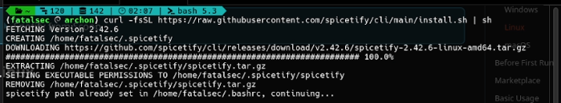
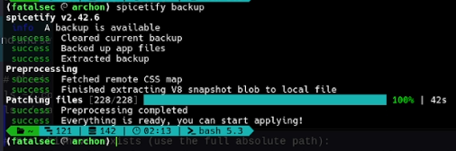
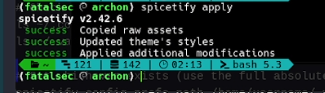
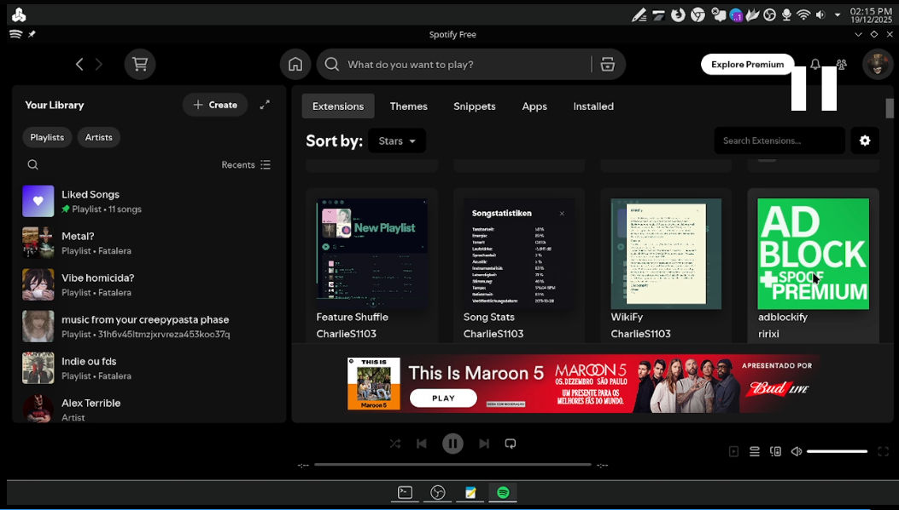

Tem como? tem sim! nada é impossível para a comunidade. Use o spicetify agora! E te explico como, veja abaixo o passo a passo!
Achei que fosse só comigo (uso o Debian 12 Bookworm), mas percebi que o Spotify já estava fora do ar há algum tempo. Só notei de verdade depois que instalei meu sistema em um SSD e, claro, não ia deixar de dar um jeito de ter o Spotify de volta.
Depois de algumas pesquisas, encontrei uma solução para trazer o spotify-client novamente, e o melhor: totalmente livre de anúncios!
Este tutorial foi feito exclusivamente para usuários de PC que utilizam o Spotify instalado via Flatpak no Linux. Embora o método possa funcionar também em outras plataformas (como Snap ou Windows), aqui vou ENSINAR apenas o processo no Flatpak, passo a passo, para garantir que tudo funcione corretamente.
Antes de começarmos, é importante garantir que você tenha o Flatpak instalado no seu sistema. Se ainda não tem, confira a documentação oficial
No Debian 12 (Bookworm), por exemplo, você pode instalar com:
sudo apt install flatpak
Depois, adicione o repositório Flathub (caso ainda não esteja configurado):
sudo flatpak remote-add --if-not-exists flathub https://flathub.org/repo/flathub.flatpakrepo
Com isso pronto, seguimos para instalar o Spotify via Flatpak
Com esse simples comando podemos instalar (Lembre-se de usar o parâmetro --user, facilita o spicetify)
flatpak install --user flathub com.spotify.Client
E agora é necessário abrir pelo menos o Spotify uma vez para criar os arquvios necessários [Prefs, Plugins, CSS, assets e etc.]
flatpak run com.spotify.Client
Verifique se o caminho do Spotify foi criado corretamente:
ls ~/.local/share/flatpak/app/com.spotify.Client/x86_64/stable/active/files/extra/share/spotify
Se esse diretório existir, significa que a instalação está pronta para receber o Spicetify.
Agora que o Spotify via Flatpak já está instalado e funcionando, vamos instalar o Spicetify, a ferramenta que permite personalizar e aplicar extensões ao Spotify.
No terminal, execute:
curl -fsSL https://raw.githubusercontent.com/spicetify/spicetify-cli/master/install.sh | sh
ATENÇÃO, NÃO INSTALE O MARKETPLACE, isso será futuramente configurado e instalado, caso seja solicitado pressione [N]
Feche e abra o terminal novamente para garantir que o comando spicetify seja reconhecido.
Defina os diretórios corretos para o Spotify e suas preferências:
spicetify config spotify_path ~/.local/share/flatpak/app/com.spotify.Client/x86_64/stable/active/files/extra/share/spotify
spicetify config prefs_path ~/.var/app/com.spotify.Client/config/spotify/prefs
Ative algumas opções úteis:
spicetify config use_xpui_extensions 1
spicetify config inject_css 1
spicetify config replace_colors 1
Confirma se está tudo OK:
spicetify config
Se você use Flatpak precisamos liberar algumas permissões para que o Spicetify consiga aplicar as modificações corretamente. Execute o comando abaixo:
flatpak override --user \
--filesystem=home \
--filesystem=~/.local/share/flatpak/app/com.spotify.Client \
--filesystem=~/.var/app/com.spotify.Client \
com.spotify.Client
Isso garante que o Spicetify tenha acesso aos diretórios necessários.
 Criar backup e aplicar:
spicetify backup
spicetify apply
Agora sim vamos estar finalmente entrando na parte interessante, vamos instalar o Marketplace
O Marketplace é onde você encontra extensões e temas criados pela comunidade. Para instalar:
curl -fsSL https://raw.githubusercontent.com/spicetify/marketplace/main/resources/install.sh | sh
Confira se o diretório foi criado:
ls ~/.config/spicetify/CustomApps
É PRECISO APARECER A PASTA MARKETPLACE
Finalize aplicando as alterações:
spicetify apply
Se aparecer esse ícone, o Spicetify foi instalado com sucesso!
"E dai já não tenho nenhum AD no meu Spotify?"
AINDA TEM AD e para remover eles você pode estar indo baixar uma extensão que bloqueia todos anúncios, aproveita para instalar um teminha legal!
Conclusão
Pronto! Agora você tem o Spotify via Flatpak rodando com o Spicetify configurado e o Marketplace instalado. A partir daqui, você pode explorar temas, extensões e personalizações para deixar seu Spotify do jeito que quiser e procurando do jeito certo sem AD.